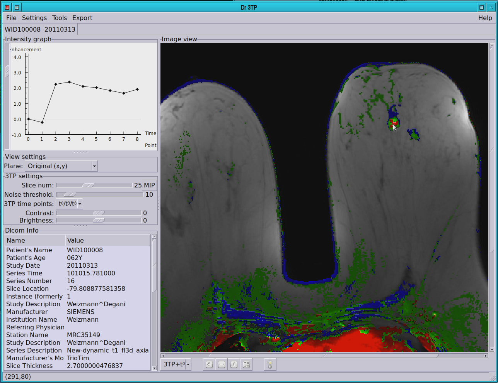
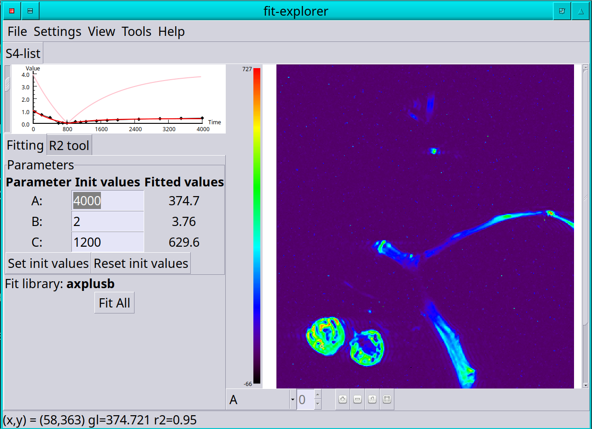

pyqt presentation
Abstract
In this lecture I will give brief background of different GUI libraries and paradigms in python. I will do a deep dive into PyQt and show lots of code examples. I will briefly mention the Qt GUI builder (and why I don't like it), scientific visualization, animation, and how to use an embedded web browser as a python frontend.
About myself
- Made Aliyah 🇮🇱 from 🇸🇪 Sweden 🫎 in 1989
- M.Sc. 🧑🎓 in Physics from the Weizmann Institute 1991
- Consultant for Prof. Hadassa Degani Since ~1992
- Major work at companies in Software and algorithms development:
- Orbotech - 16y
- XJet - 13y
- Major computer language tools:
- C/C++
- Python :snake:
- In the past (perl 🐪, tcl/tk, matlab, java :coffee:, and more)
My main WIS applications
- Dr3TP
- DrDTI
- FitExplorer
Example 1. Dr3TP
- MRI cancer diagnostics

Example 2. FitExplorer
- A tool for graphically matching fitting functions with data

GUI's
Linux (and crossplatform)
- Gtk
- Qt
- WxWidgets
- Web
- Mobile
- And lots of others
Python
- TkInter - (please don't use!) :poo:
- PyQt :-)
- PyGtk
- Kivy
- Lot's of others
- pyimgui - Immediate mode gui
A few words about Qt
- Written in C++
- Core is licensed LGPL, i.e. you can use it in commercial application (though it is tricky)
- Additional parts are licensed GPL. You're source code must be free to use this.
- Also allow commercial licensing
- Qt for python versions :snake:
- Two versions:
- PyQt - Commercial or GPL
- Qt for Python (PySide5) - LGPL
- Two versions:
- Current version is Qt6 (but I'm using Qt5 here)
Event driven programming
- Qt belongs to "event driven programming" paradigm
- 1. Define interface
- 2. Connects events with callbacks (that may create more user interface)
- Enter main loop
PyQt hello world
- Define widgets (controls) and enter main loop
Layout management
- Layout management is inserted between the parent and the widgets
- No need to place widgets by pixel position
- hello-layout.py
Layout management 2
- Layouts types:
QVBoxLayoutandQHBoxLayout- Linear vertical and horizontalQGrid- 2D gridQFormLayout- hello-form-layout.py
Tabs
- Tabs is another useful way of organizing the user interface
- hello-tabs.py
Coloring the interface
- Color the interface by using a stylesheet (like in the web)
- Can color globally or for individual widgets (typically not recommended)
- hello-stylesheet.py
Reactive
- Reactions are set up by
widget.signal_name.connect(callback_method)- In Qt terminology you connect a signal to a slot
- May use
lambdafor short functions - signal names are listed in the widget documentation
- E.g.
clickedforQPushButton() - Example: hello-name.py
Emitting signals
- Qt classes can emit custom signals
- Useful for decoupling and reuse
- Example where two classes
PingandPongdon't know about one another - Example: hello-emit-signals.py
Writing an "application"
- An application has:
- A menu bar
- A central widget
- A status row
- hello-mainwindow.py
Designer
- You can also "draw" the application through a GUI editor
- Also a great way to inspect/find widgets
- Exec: designer-qt5
- mainwin.ui
- Load and connect to it: hello-ui.py
Why I don't like designers
- (But your preferences may differ…)
- Prevents reuse and causes bad coding practices
- It is easy to extend a widget by:
- Prevents reuse and causes bad coding practices
class MyTemp(QWidget): :
- But it is difficult (impossible?) to do the same in a designer.
- Invites cut and paste (bad way of programming!)
- 2. Merging XML ui files in git is "hellish" 👹…
- 3. Difficult to use 3rd party libraries, e.g. pyqtgraph
- However, you can combine the two approaches!
The graphics view
- A widget canvas with items that may be moved, change color etc
- hello-graphics-view.py
Let's try animation, move the car
- car-stuck.py
- Doesn't work? Why?
The solution is to use a worker thread!
Lists and model view (*)
- List and table widgets support model/view
- You change the data (with some magic glue, and the display changes)
- Update data and "emit" a signal
- hello-modelview.py
Embed a browser in a widget
- QtWebEngine widget
- hello-webengine.py
- But why? See next page…
Add a webserver to python!
- Create a python thread for web server
- Serve webpages by flask (or any other python web server)
- Allows "down the line", turning your program into a web service
- Lots of scientific web visualization
- Whether web interface or qt interface, it's a matter of choice and taste
- hello-webengine-and-flask.py
pyqtgraph
- Scientific widgets
- MIT license
- hello-xygraph.py
matplotlib
- Need to install matplotlib python qt backend
- Embed matplotlib in python
- hello-qt-matplotlib.py
- Updating graph (animation) example: https://www.pythonguis.com/tutorials/plotting-matplotlib/
- Apparenty buggy!
General notes
- Separate GUI from functionality!
- My modus operandi:
- Write functionality in a library
- Write a command line interface
- Write GUI
- Deployment of python programs is difficult!
- (But if someone shares the computer, it may not be necessary)
- Deploying is easier with C++ (though I have little experience in deploying python…)
- Github Copilot is scary good for PyQt!
References
- Qt home page: https://www .qt.io
- Qt for python home page: https://doc.qt.io/qtforpython-5/
- Flask (web framework) home page: https://flask.palletsprojects.com/en/3.0.x/
- https://www.pyqtgraph.org/
- Tutorials: